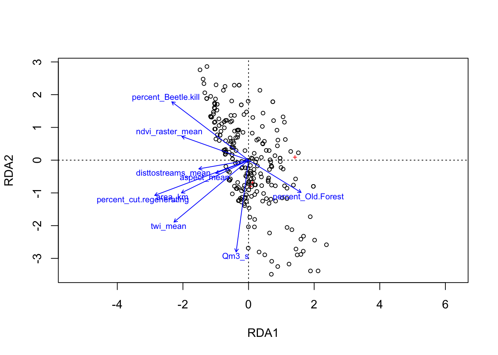

4.3 Reporting initial results and evaluating the quality of reflective measurement models
estimated by PLS-SEM both in terms of reliability and validity.
A plot of result reliability measures:

- Indicator reliability: First we want to know how much of each indicator’s variance is explained by the latent variable it is assigned to. ‘To compute an indicator’s explained variance, we need to square the indicator loading, which is the bivariate correlation between indicator and construct. As such, the indicator reliability indicates the communality of an indicator. Indicator loadings above 0.708 are recommended, since they indicate that the construct explains more than 50 percent of the indicator’s variance, thus providing acceptable indicator reliability.’ Hair et al. 2021
## TOPO LANDCOVER HYDRO DOC
## topo_1 0.665 0.000 0.000 0.000
## topo_2 0.755 0.000 0.000 0.000
## topo_3 0.279 0.000 0.000 0.000
## topo_4 0.846 0.000 0.000 0.000
## hydro_1 0.000 0.000 1.000 0.000
## landcover_1 0.000 0.807 0.000 0.000
## landcover_2 0.000 0.783 0.000 0.000
## doc_1 0.000 0.000 0.000 1.000Take home: Our current topo_3 (subwatershed area in m^2) as a low reliability which can contribute to more measurement error to the model, which can weaken the model’s validity and interpretability. This means that less than 50% of it’s variance is explained by other ‘topography’ indicators, which makes sense. topo_3 represents watershed area may be a better variable to group with ‘hydrology’ rather than topograhy. We’ll test this along with other model variations in the next chapter.
- Then we want to check the ‘internal consistency reliability’ (rhoC). Internal consistency reliability is the extent to which indicators measuring the same construct are associated with each other. ’Higher values indicate higher levels of reliability. For example, reliability values between 0.60 and 0.70 are considered “acceptable in exploratory research,” whereas values between 0.70 and 0.90 range from “satisfactory to good.” Values above 0.90 (and definitely above 0.95) are problematic, since they indicate that the indicators are redundant, thereby reducing construct validity (Diamantopoulos, Sarstedt, Fuchs, Wilczynski, & Kaiser, 2012).’Hair et al. 2021 Other sources indicate that 0.85 is a more conservative threshold value.
## alpha rhoC AVE rhoA
## TOPO 0.792 0.871 0.636 0.836
## LANDCOVER 0.742 0.886 0.795 0.744
## HYDRO 1.000 1.000 1.000 1.000
## DOC 1.000 1.000 1.000 1.000
##
## Alpha, rhoC, and rhoA should exceed 0.7 while AVE should exceed 0.5Our rhoC values fall in the higher (not ideal) range of ‘satisfactory to good’ but our ‘problematic’ values are due to these latent values having single indicators, so they aren’t truly problematic.
- Convergent Validity:
When we assess convergent validity, we’re checking how well each indicator represents the latent variable it’s supposed to measure. For convergent validity, we want to see if the indicators of the same latent variable are closely related rather than explaining different processes. This is where average variance extracted (AVE) comes in:
- AVE shows how much of the total variance in the indicators is actually explained by the construct.
## alpha rhoC AVE rhoA
## TOPO 0.792 0.871 0.636 0.836
## LANDCOVER 0.742 0.886 0.795 0.744
## HYDRO 1.000 1.000 1.000 1.000
## DOC 1.000 1.000 1.000 1.000
##
## Alpha, rhoC, and rhoA should exceed 0.7 while AVE should exceed 0.5Here then we should not be surprised to see 1.00 for HYDRO and DOC AVE, as, up to this point, we have included only one indicator for these latent variables. However, for topo and landcover, we can be confident that we have chosen variables that are measuring the same thing as our AVE are high (over 0.5)
- Discriminant Validity
Now we want to make sure that different latent variables in the model are distinct from each other, ie. they measure different concepts. One way to check this is by using the heterotrait–monotrait (HTMT) ratio.
If the HTMT values are low (typically below 0.9), it indicates that the constructs are distinct and measure different concepts.
## TOPO LANDCOVER HYDRO DOC
## TOPO . . . .
## LANDCOVER 1.053 . . .
## HYDRO 0.486 0.501 . .
## DOC 0.584 0.554 0.305 .In this current configuration, topo and landcover may not be distinct. This is hardly surprising, landcover indicators are often directly and strongly correlated with many of the topographical variables. In this case, we are looking at the percentage of each subwatershed that is covered by ‘cut/regenerating’ forest. Many of these sites were on lower slopes (likely for ease of access), and in the case of Deadhorse, almost entirely on the southern aspect. Furthermore, ‘TWI’ or the total wetness index likely drives NDVI. A high correlation between topography and landcover in our SEM model isn’t necessarily problematic if it aligns with the underlying ecology of the study area Combining them into a single latent variable isn’t ideal for our research question, where we want to see if we can evaluate the impacts of land cover independent of topography. We may not have this issue if we look at other land cover types. Let’s come back to this to see if it needs addressing. We might be able to control for one construct in relation to the other, such as controlling for topography when examining landcover’s effect, to clarify their roles without removing one or the other.